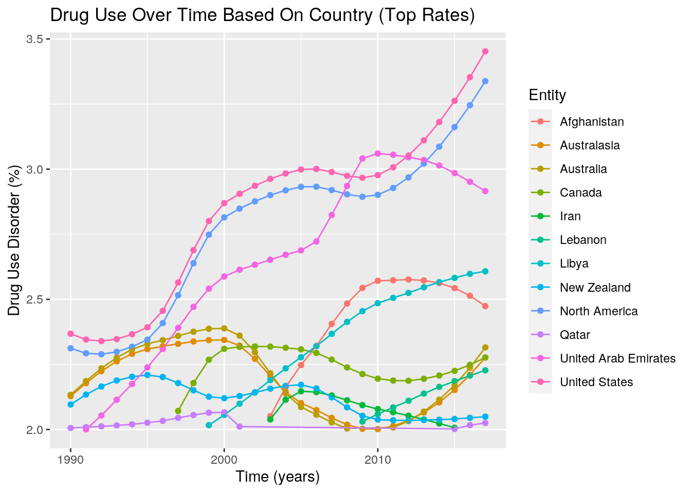
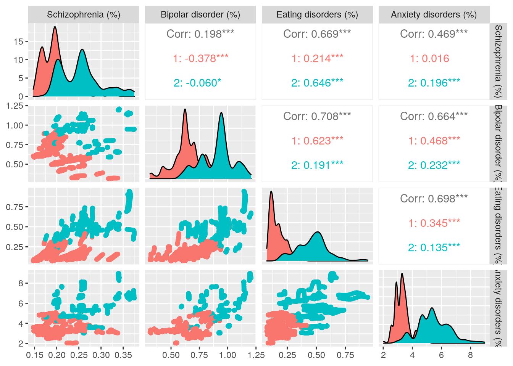

The two datasets I’m joining together are from the same study, and contain informtaion on mental health statistics throughout the world from 1990-2017. The first dataset contains the country, the country’s code, the year, and the percentages of people with different types of mental and substance use disorders. The second dataset also contains the country, country’s code, and year, but differs in that the last variable is the total number of people with depression. I found my data on data.world, but originally comes from Our World in Data and was created by Hannah Ritchi and Max Rosner. They collected this data from the Institute for Health Metrics and Evaluation.
This dataset seemed really interesting to me because I think that with the pandemic happening, mental health has gained some more awareness because it’s been on our radars more. I think it’s important to look at a broader scope of the world’s mental health, even before COVID, because it can be stigmitized and it’s something that is really under-reported. Some things to also consider in association with this dataset are things like education level, income level, age, and gender.
library(tidyverse)
mental_percentages <- read_csv("Depression Percentages - Sheet1.csv")
mental_count <- read_csv("Depression Numbers (csv) - Sheet1.csv")
mental_percentages %>% glimpse()## Rows: 6,468
## Columns: 10
## $ Entity <chr> "Afghanistan", "Afghanistan", "Afghanista…
## $ Code <chr> "AFG", "AFG", "AFG", "AFG", "AFG", "AFG",…
## $ Year <dbl> 1990, 1991, 1992, 1993, 1994, 1995, 1996,…
## $ `Schizophrenia (%)` <dbl> 0.1605595, 0.1603119, 0.1601348, 0.160037…
## $ `Bipolar disorder (%)` <dbl> 0.6977794, 0.6979606, 0.6981070, 0.698256…
## $ `Eating disorders (%)` <dbl> 0.10185486, 0.09931279, 0.09669159, 0.094…
## $ `Anxiety disorders (%)` <dbl> 4.828830, 4.829740, 4.831108, 4.830864, 4…
## $ `Drug use disorders (%)` <dbl> 1.677082, 1.684746, 1.694334, 1.705320, 1…
## $ `Depression (%)` <dbl> 4.071831, 4.079531, 4.088358, 4.096190, 4…
## $ `Alcohol use disorders (%)` <dbl> 0.6724041, 0.6717681, 0.6706440, 0.669738…mental_count %>% glimpse()## Rows: 6,468
## Columns: 4
## $ Entity <chr> "Afghanistan", "Afghanistan", "Afg…
## $ Code <chr> "AFG", "AFG", "AFG", "AFG", "AFG",…
## $ Year <dbl> 1990, 1991, 1992, 1993, 1994, 1995…
## $ `People Suffering From Depression` <dbl> 318435.8, 329044.8, 382544.6, 4403…The data already appears to be tidy, so I’ll have to make it untidy and rearrange some statistics before putting it back together.
library(tidyverse)
untidy_percentages <- mental_percentages %>% pivot_longer(contains("(%)")) %>%
separate(name, into = c("Disorders"), sep = "(%)") %>% rename(Percentage = "value")
untidy_count <- mental_count %>% pivot_wider(names_from = "Year",
values_from = "People Suffering From Depression")
untidy_percentages %>% head()## # A tibble: 6 x 5
## Entity Code Year Disorders Percentage
## <chr> <chr> <dbl> <chr> <dbl>
## 1 Afghanistan AFG 1990 Schizophrenia ( 0.161
## 2 Afghanistan AFG 1990 Bipolar disorder ( 0.698
## 3 Afghanistan AFG 1990 Eating disorders ( 0.102
## 4 Afghanistan AFG 1990 Anxiety disorders ( 4.83
## 5 Afghanistan AFG 1990 Drug use disorders ( 1.68
## 6 Afghanistan AFG 1990 Depression ( 4.07untidy_count %>% head()## # A tibble: 6 x 30
## Entity Code `1990` `1991` `1992` `1993` `1994` `1995` `1996` `1997` `1998`
## <chr> <chr> <dbl> <dbl> <dbl> <dbl> <dbl> <dbl> <dbl> <dbl> <dbl>
## 1 Afgha… AFG 3.18e5 3.29e5 3.83e5 4.40e5 4.57e5 4.71e5 4.87e5 5.00e5 5.10e5
## 2 Alban… ALB 6.00e4 6.08e4 6.15e4 6.21e4 6.27e4 6.32e4 6.37e4 6.44e4 6.89e4
## 3 Alger… DZA 7.17e5 7.40e5 7.63e5 7.87e5 8.12e5 8.37e5 8.63e5 8.90e5 9.16e5
## 4 Ameri… ASM 1.09e3 1.12e3 1.16e3 1.19e3 1.22e3 1.25e3 1.27e3 1.30e3 1.32e3
## 5 Andea… <NA> 7.98e5 8.23e5 8.48e5 8.72e5 8.97e5 9.21e5 9.45e5 9.67e5 9.89e5
## 6 Andor… AND 2.16e3 2.35e3 2.47e3 2.62e3 2.61e3 2.59e3 2.62e3 2.66e3 2.69e3
## # … with 19 more variables: `1999` <dbl>, `2000` <dbl>, `2001` <dbl>,
## # `2002` <dbl>, `2003` <dbl>, `2004` <dbl>, `2005` <dbl>, `2006` <dbl>,
## # `2007` <dbl>, `2008` <dbl>, `2009` <dbl>, `2010` <dbl>, `2011` <dbl>,
## # `2012` <dbl>, `2013` <dbl>, `2014` <dbl>, `2015` <dbl>, `2016` <dbl>,
## # `2017` <dbl>retidy_percentages <- untidy_percentages %>% pivot_wider(names_from = "Disorders",
values_from = "Percentage")
retidy_count <- untidy_count %>% pivot_longer(cols = "1990":"2017",
names_to = "Year", values_to = "People Suffering From Depression")
retidy_percentages %>% head()## # A tibble: 6 x 10
## Entity Code Year `Schizophrenia … `Bipolar disord… `Eating disorde…
## <chr> <chr> <dbl> <dbl> <dbl> <dbl>
## 1 Afgha… AFG 1990 0.161 0.698 0.102
## 2 Afgha… AFG 1991 0.160 0.698 0.0993
## 3 Afgha… AFG 1992 0.160 0.698 0.0967
## 4 Afgha… AFG 1993 0.160 0.698 0.0943
## 5 Afgha… AFG 1994 0.160 0.698 0.0924
## 6 Afgha… AFG 1995 0.160 0.699 0.0910
## # … with 4 more variables: `Anxiety disorders (` <dbl>, `Drug use disorders
## # (` <dbl>, `Depression (` <dbl>, `Alcohol use disorders (` <dbl>retidy_count %>% head()## # A tibble: 6 x 4
## Entity Code Year `People Suffering From Depression`
## <chr> <chr> <chr> <dbl>
## 1 Afghanistan AFG 1990 318436.
## 2 Afghanistan AFG 1991 329045.
## 3 Afghanistan AFG 1992 382545.
## 4 Afghanistan AFG 1993 440382.
## 5 Afghanistan AFG 1994 456917.
## 6 Afghanistan AFG 1995 471475.For the first dataset, I condensed the number of columns by putting all the different disorders into one column. I did this using pivot_longer(). This would make it very difficult to merge the datasets and to be able to look at the percentages of a specific mental/substance use disorder over the years. I then just reversed it back to being tidy using pivot_wider(). For the second dataset, I widened the dataset by adding columns for each of the years and putting the number of people with depression within that column. I did this using pivot_wider(). This makes it harder to interpret the dataset because it doesn’t specify what the value is under year; you would have to already know what it is. It also makes it harder to pinpoint a certain value at a given year for whatever country it is you’re analyzing. I then reversed it back to being tidy using pivot_longer().
total_mental <- full_join(mental_percentages, mental_count, by = c("Entity",
"Code", "Year"))I decided to do a full join on my two datasets because I thought that would be the simplest way to connect them. The two datasets already had the exact same observations for 3 of the variables, so I just connected them through those shared values to seamlessly add the one variable in the second dataset that was different. With this process, none of the cases were dropped.
# Categorical summary statistics
total_mental %>% summarize(n_distinct(Entity))## # A tibble: 1 x 1
## `n_distinct(Entity)`
## <int>
## 1 231total_mental %>% summarise(n_distinct(Code))## # A tibble: 1 x 1
## `n_distinct(Code)`
## <int>
## 1 197total_mental %>% summarize(n_distinct(Year))## # A tibble: 1 x 1
## `n_distinct(Year)`
## <int>
## 1 28# Numerical summary statistics
total_mental %>% group_by(Year) %>% summarize(sd(`Schizophrenia (%)`))## # A tibble: 28 x 2
## Year `sd(\`Schizophrenia (%)\`)`
## <dbl> <dbl>
## 1 1990 0.0440
## 2 1991 0.0440
## 3 1992 0.0440
## 4 1993 0.0440
## 5 1994 0.0441
## 6 1995 0.0441
## 7 1996 0.0442
## 8 1997 0.0443
## 9 1998 0.0444
## 10 1999 0.0445
## # … with 18 more rowstotal_mental %>% group_by(Entity) %>% summarize(mean(`Bipolar disorder (%)`))## # A tibble: 231 x 2
## Entity `mean(\`Bipolar disorder (%)\`)`
## <chr> <dbl>
## 1 Afghanistan 0.702
## 2 Albania 0.700
## 3 Algeria 0.810
## 4 American Samoa 0.467
## 5 Andean Latin America 0.876
## 6 Andorra 0.964
## 7 Angola 0.619
## 8 Antigua and Barbuda 0.924
## 9 Argentina 0.766
## 10 Armenia 0.714
## # … with 221 more rowstotal_mental %>% summarize(max(`People Suffering From Depression`))## # A tibble: 1 x 1
## `max(\`People Suffering From Depression\`)`
## <dbl>
## 1 264455593.total_mental %>% summarize(min(`People Suffering From Depression`))## # A tibble: 1 x 1
## `min(\`People Suffering From Depression\`)`
## <dbl>
## 1 931.total_mental %>% summarize(min(`Eating disorders (%)`))## # A tibble: 1 x 1
## `min(\`Eating disorders (%)\`)`
## <dbl>
## 1 0.0739total_mental %>% group_by(Entity, Code) %>% summarize(mean(`Drug use disorders (%)`))## # A tibble: 231 x 3
## # Groups: Entity [231]
## Entity Code `mean(\`Drug use disorders (%)\`)`
## <chr> <chr> <dbl>
## 1 Afghanistan AFG 2.12
## 2 Albania ALB 0.499
## 3 Algeria DZA 1.54
## 4 American Samoa ASM 0.759
## 5 Andean Latin America <NA> 0.647
## 6 Andorra AND 0.885
## 7 Angola AGO 0.512
## 8 Antigua and Barbuda ATG 0.776
## 9 Argentina ARG 0.939
## 10 Armenia ARM 0.465
## # … with 221 more rowstotal_mental %>% filter(Entity == "United States" & Year == "2017")## # A tibble: 1 x 11
## Entity Code Year `Schizophrenia … `Bipolar disord… `Eating disorde…
## <chr> <chr> <dbl> <dbl> <dbl> <dbl>
## 1 Unite… USA 2017 0.334 0.651 0.513
## # … with 5 more variables: `Anxiety disorders (%)` <dbl>, `Drug use disorders
## # (%)` <dbl>, `Depression (%)` <dbl>, `Alcohol use disorders (%)` <dbl>,
## # `People Suffering From Depression` <dbl>total_mental %>% summarize(cor(`Anxiety disorders (%)`, `Depression (%)`,
use = "pair"))## # A tibble: 1 x 1
## `cor(\`Anxiety disorders (%)\`, \`Depression (%)\`, use = "pair")`
## <dbl>
## 1 0.379total_mental %>% select(Entity, Year, `Alcohol use disorders (%)`) %>%
arrange(desc(`Alcohol use disorders (%)`))## # A tibble: 6,468 x 3
## Entity Year `Alcohol use disorders (%)`
## <chr> <dbl> <dbl>
## 1 Belarus 2010 5.47
## 2 Belarus 2011 5.47
## 3 Belarus 2012 5.47
## 4 Belarus 2009 5.46
## 5 Belarus 2013 5.46
## 6 Belarus 2014 5.44
## 7 Belarus 2008 5.43
## 8 Belarus 2015 5.41
## 9 Belarus 2007 5.40
## 10 Russia 2000 5.39
## # … with 6,458 more rowstotal_mental %>% select(Entity, Year, `Depression (%)`, `People Suffering From Depression`) %>%
mutate(dep.decimal = `Depression (%)`/100, Total_Pop = `People Suffering From Depression`/dep.decimal)## # A tibble: 6,468 x 6
## Entity Year `Depression (%)` `People Suffering From… dep.decimal Total_Pop
## <chr> <dbl> <dbl> <dbl> <dbl> <dbl>
## 1 Afghani… 1990 4.07 318436. 0.0407 7820457.
## 2 Afghani… 1991 4.08 329045. 0.0408 8065750.
## 3 Afghani… 1992 4.09 382545. 0.0409 9356924.
## 4 Afghani… 1993 4.10 440382. 0.0410 10751003.
## 5 Afghani… 1994 4.10 456917. 0.0410 11145446.
## 6 Afghani… 1995 4.10 471475. 0.0410 11487607.
## 7 Afghani… 1996 4.11 486916. 0.0411 11854319.
## 8 Afghani… 1997 4.11 499770. 0.0411 12157398.
## 9 Afghani… 1998 4.11 509695. 0.0411 12387973.
## 10 Afghani… 1999 4.12 503305. 0.0412 12223159.
## # … with 6,458 more rowscormat <- total_mental %>% select(`Schizophrenia (%)`:`Alcohol use disorders (%)`) %>%
cor(use = "pair")
cormat## Schizophrenia (%) Bipolar disorder (%)
## Schizophrenia (%) 1.00000000 0.19845551
## Bipolar disorder (%) 0.19845551 1.00000000
## Eating disorders (%) 0.66881555 0.70805533
## Anxiety disorders (%) 0.46932466 0.66374529
## Drug use disorders (%) 0.47520269 0.36387062
## Depression (%) 0.16747753 0.14855722
## Alcohol use disorders (%) -0.05920694 0.07969432
## Eating disorders (%) Anxiety disorders (%)
## Schizophrenia (%) 0.66881555 0.4693247
## Bipolar disorder (%) 0.70805533 0.6637453
## Eating disorders (%) 1.00000000 0.6980261
## Anxiety disorders (%) 0.69802614 1.0000000
## Drug use disorders (%) 0.49418748 0.6160773
## Depression (%) 0.24071598 0.3790116
## Alcohol use disorders (%) 0.03525434 -0.1365023
## Drug use disorders (%) Depression (%)
## Schizophrenia (%) 0.4752027 0.16747753
## Bipolar disorder (%) 0.3638706 0.14855722
## Eating disorders (%) 0.4941875 0.24071598
## Anxiety disorders (%) 0.6160773 0.37901155
## Drug use disorders (%) 1.0000000 0.36653875
## Depression (%) 0.3665388 1.00000000
## Alcohol use disorders (%) -0.1132449 0.05014556
## Alcohol use disorders (%)
## Schizophrenia (%) -0.05920694
## Bipolar disorder (%) 0.07969432
## Eating disorders (%) 0.03525434
## Anxiety disorders (%) -0.13650233
## Drug use disorders (%) -0.11324492
## Depression (%) 0.05014556
## Alcohol use disorders (%) 1.00000000My summary statistics showed me a lot of things. For my categorical variable, I saw that 231 countries/entities were used in this dataset, but there were only 197 codes, which means not every entity had a code. The dataset also covers a 28 year time period. For the numeric data, I wanted to see different things. Some I thought were pretty relavent to the dataset, and some I was just curious to know. For instance, I found the standard deviation for schizophrenia over the years. I also wanted to know what the mean bipolar percentage was over the years for each entity, as well as the minimum percentage for eating disorders, amung other statistcs. I also narrowed the data down to just the United States in the most recent year (2017) to see those statistics. Some of the more relavent things I did were things like mutating the data to be able to get the total population of an entity per year. I also found the maximum and minimum number of people suffering from depression, to be able to see the difference. And I made a correlation matrix using the numerical values that were a percentage.
# heatmap
tidycor <- cormat %>% as.data.frame %>% rownames_to_column("var1") %>%
pivot_longer(-1, names_to = "var2", values_to = "correlation")
tidycor## # A tibble: 49 x 3
## var1 var2 correlation
## <chr> <chr> <dbl>
## 1 Schizophrenia (%) Schizophrenia (%) 1
## 2 Schizophrenia (%) Bipolar disorder (%) 0.198
## 3 Schizophrenia (%) Eating disorders (%) 0.669
## 4 Schizophrenia (%) Anxiety disorders (%) 0.469
## 5 Schizophrenia (%) Drug use disorders (%) 0.475
## 6 Schizophrenia (%) Depression (%) 0.167
## 7 Schizophrenia (%) Alcohol use disorders (%) -0.0592
## 8 Bipolar disorder (%) Schizophrenia (%) 0.198
## 9 Bipolar disorder (%) Bipolar disorder (%) 1
## 10 Bipolar disorder (%) Eating disorders (%) 0.708
## # … with 39 more rowstidycor %>% ggplot(aes(var1, var2, fill = correlation)) + geom_tile() +
scale_fill_gradient2(low = "yellow", mid = "pink", high = "red") +
geom_text(aes(label = round(correlation, 2)), color = "black",
size = 4) + theme(axis.text.x = element_text(angle = 90,
hjust = 1)) + coord_fixed()The heatmap shows the correlations between all of the different mental/substance use disorders. There really wasn’t a strong correlation with alcohol use with any other disorder. However, drug use disorders did have pretty noticeable correlations with almost every other disorder. Interestingly, the strongest correlation is between eating disorders and bipolar disorder. Eating disorders also had very strong correlations with anxiety and Schizophrenia. This could maybe mean certain mental disorders can trigger an eating disorder. Bipolar disorder and anxiety were also very strongly related.
# ggplots
total_mental %>% group_by(Year, `Drug use disorders (%)`, Entity) %>%
filter(`Drug use disorders (%)` > 2) %>% ggplot(aes(Year,
`Drug use disorders (%)`, color = Entity)) + geom_point() +
geom_line() + labs(title = "Drug Use Over Time Based On Country (Top Rates)",
x = "Time (years)", y = "Drug Use Disorder (%)")
This graph shows drug use disorders over the 28 year time period for the top 12 entities with the highest rates.The United States had the highest rates of drug use disorders for the entire time period, and you can really see in increase at around 2010. The only other entity near the same rates is North America, which of course includes the US, and the US probably has a very large influence on its rates. I decided to zoom in and just focus on the top rates because there were so many entities with very low drug rates and change over time, and it was impossible to decipher that section of the graph.
total_mental %>% group_by(Year, Entity, `People Suffering From Depression`) %>%
filter(`People Suffering From Depression` > 4e+07) %>% ggplot(aes(Entity,
`People Suffering From Depression`, color = Entity)) + geom_bar(stat = "summary") +
theme(legend.position = "none") + ggtitle("People With Depression by Entity (High)") +
xlab("Entity") + scale_y_continuous(breaks = seq(5e+07, 2.7e+08,
2e+07), name = "People With Depression") + geom_errorbar(stat = "summary",
width = 0.5, fun.data = mean_se) + theme(axis.text.x = element_text(angle = 45,
hjust = 1))I made a bar graph of the top 10 entities with the highest population of people suffering from depression, as well as the world’s total count of people with depression. I found the results very interesting and noticed a lot of Asian countries and Socioeconomic demographics. Once realizing the what the top 10 entities were, I thought it probably had a lot to do with the fact that all of these have very large total populations, so it would make sense for the depressed population to also be high. Because of that, I decided to also make a graph of the top entities with the highest percentage of depressed people to compare. However, I did find it interesting that the highest Socio Demographic Index was the for the middle socioeconomic group. I also included error bars, and found it interesting that aside from the world there really wasn’t a lot of error to account for.
total_mental %>% group_by(Year, Entity, `Depression (%)`) %>%
filter(`Depression (%)` > 4.5) %>% ggplot(aes(Entity, `Depression (%)`,
color = Entity)) + geom_bar(stat = "summary") + theme(legend.position = "none") +
ggtitle(" Percentage of People With Depression by Entity (High)") +
xlab("Entity") + scale_y_continuous(breaks = seq(0, 8, 1),
name = "People With Depression (%)") + geom_errorbar(stat = "summary",
width = 0.5, fun.data = mean_se) + coord_flip()This was the graph I made with the top percentages of people suffering from depression based on entities. I think this kind of graph is a lot more accurate because there is so much variability of population within each country. For instance, I temporarily had made a graph of the lowest number of people with depression, and Greenland was on that graph. However, Greenland actually shows to have the highest percentage by far of people suffering with depression based on this graph. So it’s interesting to see how much of a difference there is and how that can really skew your data. None of the entities from the graph above is even on this graph.
library(cluster)
pam_data <- total_mental %>% select(`Schizophrenia (%)`:`Anxiety disorders (%)`) %>%
scale %>% pam(2)
pam_data## Medoids:
## ID Schizophrenia (%) Bipolar disorder (%) Eating disorders (%)
## [1,] 4931 -0.3556445 -0.1506084 -0.5042023
## [2,] 4579 0.8410388 1.1766069 1.5194896
## Anxiety disorders (%)
## [1,] -0.5151539
## [2,] 1.1653386
## Clustering vector:
## [1] 1 1 1 1 1 1 1 1 1 1 1 1 1 1 1 1 1 1 1 1 1 1 1 1 1 1 1 1 1 1 1 1 1 1 1 1 1
## [38] 1 1 1 1 1 1 1 1 1 1 1 1 1 1 1 1 1 1 1 1 1 1 1 1 1 1 1 1 1 1 1 1 1 1 1 1 1
## [75] 1 1 1 1 1 1 1 1 1 1 1 1 1 1 1 1 1 1 1 1 1 1 1 1 1 1
## [ reached getOption("max.print") -- omitted 6368 entries ]
## Objective function:
## build swap
## 1.291893 1.265763
##
## Available components:
## [1] "medoids" "id.med" "clustering" "objective" "isolation"
## [6] "clusinfo" "silinfo" "diss" "call" "data"final <- total_mental %>% mutate(cluster = as.factor(pam_data$clustering))
library(GGally)
ggpairs(final, columns = 4:7, aes(color = cluster))
plot(pam_data, which = 2)I started off by choosing which variables I wanted to cluster and scaling them, then running the PAM code using two clusters. At this stage, it shows which values were assigned to which cluster (1 or 2). After that, since I’m using 4 variables, I made a visualization to show every possible combination of clusters on a 2D plane, to be able to help interpret the results.The graphs that represent the values for Schizophrenia and eating disorder, bipolar disorder and eating disorders, and schizophrenia and anxiety have the least separation in clusters. I think this makes sense because these variables had very high correlations with each other, so I think they would be very closely related when clustered together. However, because of this close relationship, when a silhouette test was run the average silhouette width was only 0.5, which is pretty weak (maybe bordering reasonable data). I came to the number of clusters by just trying out different combinations of variables and cluster numbers until I found the highest silhouette value (this one).